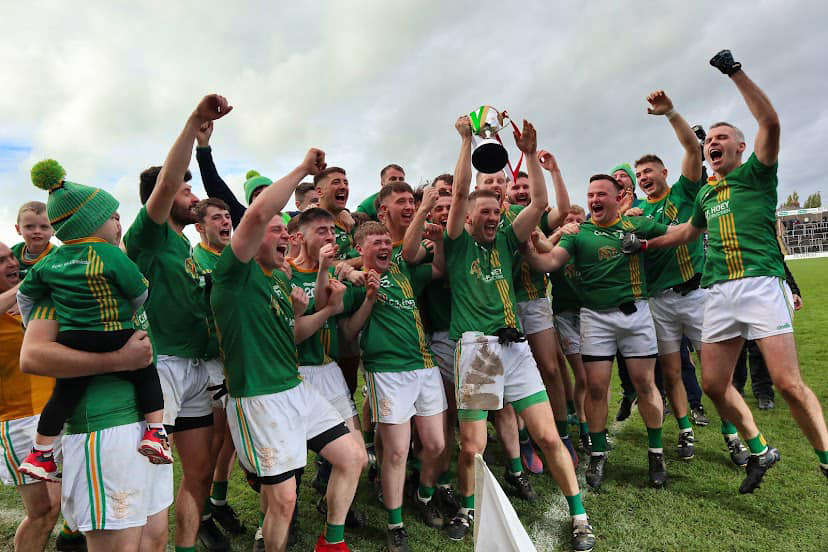

CASTLETOWN G.F.C.
HISTORY
1896 - 1950
1905 Senior Champions
- The club was founded in 1896 by Joe Curran
- Curran was one of Meath's best players, even going on to represent Leinster in the Railway Cup
- Castletown won 5 senior titles in 7 years between 1902 and 1908, a feat they haven't achieved since
- Once they were relegated to Intermediate, they yo-yo'ed between the two divisions for half a century
- Two Intermediate championships were won in that time, in 1927 and 1946
1950 - 1980
1976 Intermediate Champions
- Our pitch that we still use today was opened in 1956 in Knock, Castletown
- Our only championship win of this fifty-year stretch came in 1976, with a third Intermediate title
- The '76 team was captained by Christy Donegan and also featured Castletown's greatest player: Kevin McConnell
- McConnell is Castletown's only ever senior All-Ireland winner, playing in the 1967 Meath team
- He would later move to neighbouring rival club Syddan and finish his career there
1980 - 1996
'The Pavilion'
- Castletown stayed in the Intermediate division for decades, not getting promoted or relegated
- Our clubhouse and roofed-stand 'The Pavilion' was opened in 1984
- Major fundraising was done by the GAA club, primary school, and marching band to pay for it
- 1996 marked the centenary year of the club, and a sign reading '1896 - 1996' was erected over the gate
- The book '100 years of Castletown' was also published by Barbara and Colm Smyth, detailing the club's history
1996 - Present

2022 Junior Champions
- We reached our lowest moment in 2020, getting relegated to Junior for the first time in our history
- The 125 year anniversary of the club was celebrated in 2021
- After 2 years in Junior, Castletown won their only ever Junior championship in 2022
- They progressed as far as the All-Ireland semi-final, beating Adamstown to become Leinster champions
- 2 of the best players in the country, David & Páidí Clífford, were on the Fossa team that ended the All-Ireland dreams